How it works
The die holds two matching units. In each one, a polysilicon diaphragm pushes on a comb-driven double-ended tuning fork (DETF) through a lever plate. The fork’s two tines vibrate equally and in antiphase, so the net force on the anchors is nearly zero, which gives the resonator a high quality factor.
The SENSE diaphragm seals a near-vacuum cavity, so outside pressure bends it, strains its fork, and raises the fork’s frequency. The REF unit is identical but vented, so its fork sees the same temperature and packaging stress without the pressure. The readout is the difference between the two frequencies:
Δf = fSENSE − fREF, P = (Δf − Δf0) / K, with K = 50.9 Hz/kPa from the FEA

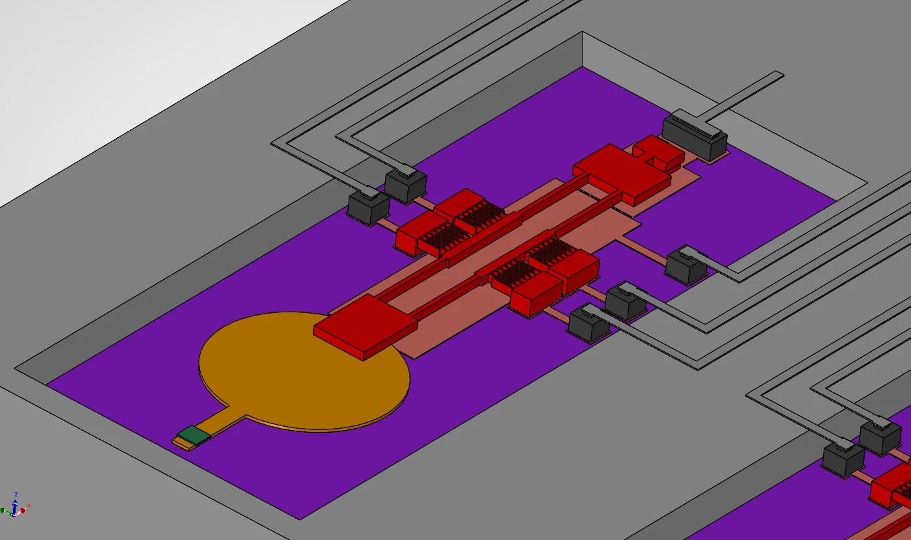
Final design
The sensor is built for a process inspired by Sandia’s IMEMS, which builds MEMS inside a KOH-etched trench beside the CMOS readout circuits on one chip. Sandia’s exact process isn’t public, so this flow follows the same general approach without being their process. The final design (version 4.2) builds the MEMS in 9 process steps inside a 14.6 µm deep trench, and its 15-layer mask set passes all of its automated layout checks.
- A vacuum seal, with no epoxy. The cavity is emptied through a side port, then LPCVD nitride pinches the port’s two 1 µm slots shut, sealing the cavity near vacuum. The diaphragm needs no release holes or epoxy, and the REF unit’s port is reopened at the end so its cavity vents.
- One 6 µm resonator layer. A single polished 6 µm polysilicon layer forms the lever plate, the 3 × 184 µm tines, and combs with 1 µm fingers and gaps.
- A solid root block on a short neck. The block that joins the tines is released and held by one 6 × 8 µm neck, which moves the unwanted in-phase mode away from the operating mode.
- Flat layers and anti-stiction features. Each oxide layer and the resonator layer are polished flat, and dimples plus supercritical CO2 drying after each HF release keep parts from sticking.

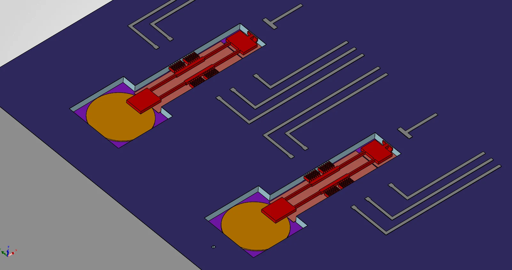

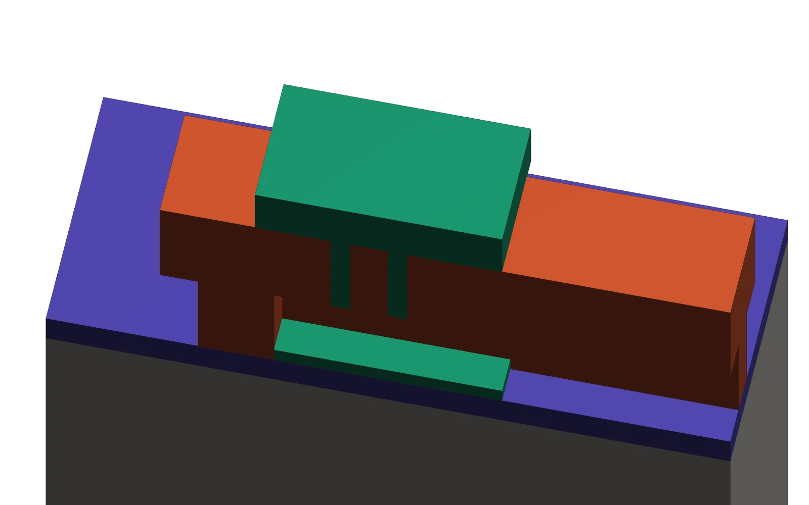

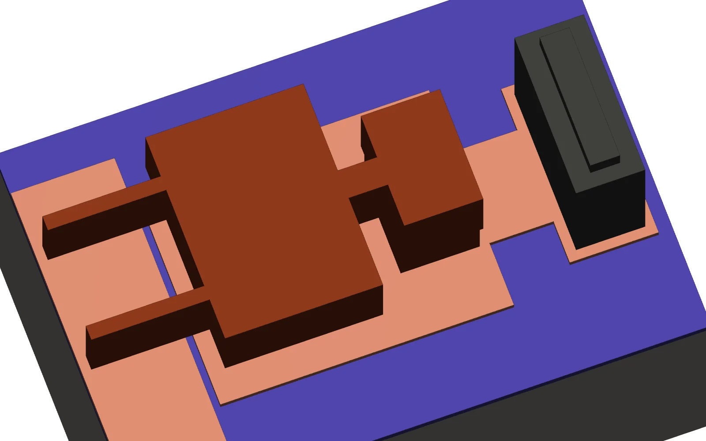

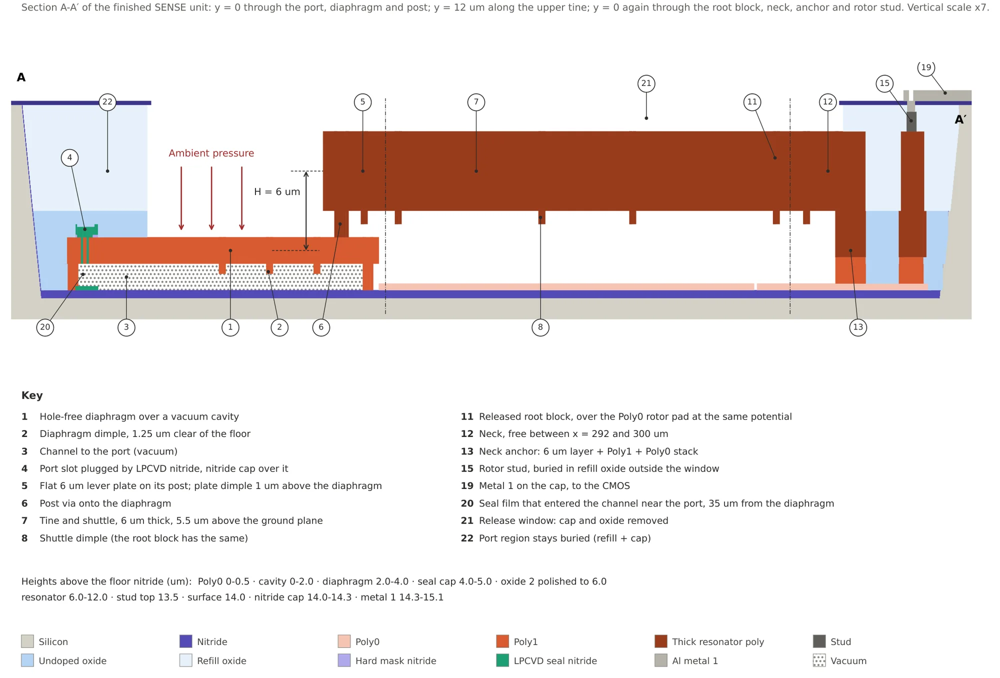

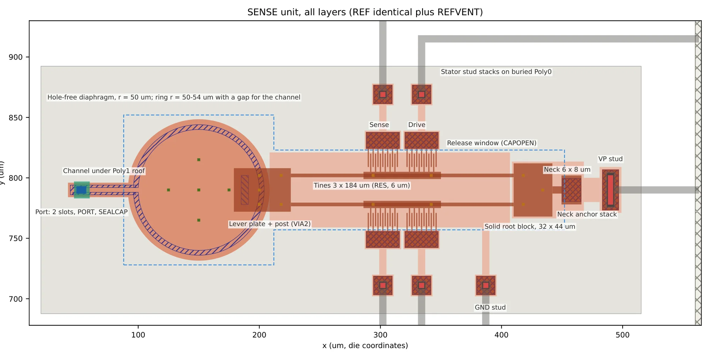
Ansys FEA
I simulated both units together in Ansys Mechanical with a 5-body model: the substrate, both diaphragms with their channels, and both tuning forks. A large-deflection static structural step loads the SENSE diaphragm with pressure, then a prestressed modal analysis finds each fork’s frequency. I ran 26 pressure points from 0 to 2.5 atm and a temperature sweep from −55 to 85 °C. The model is version 4.1, which differs from the final design only by release holes in the root block.

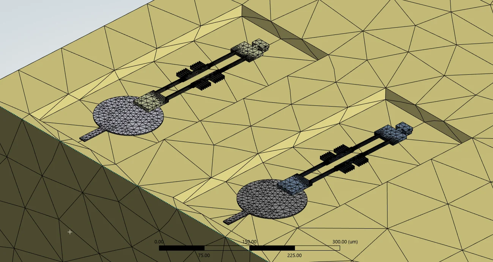

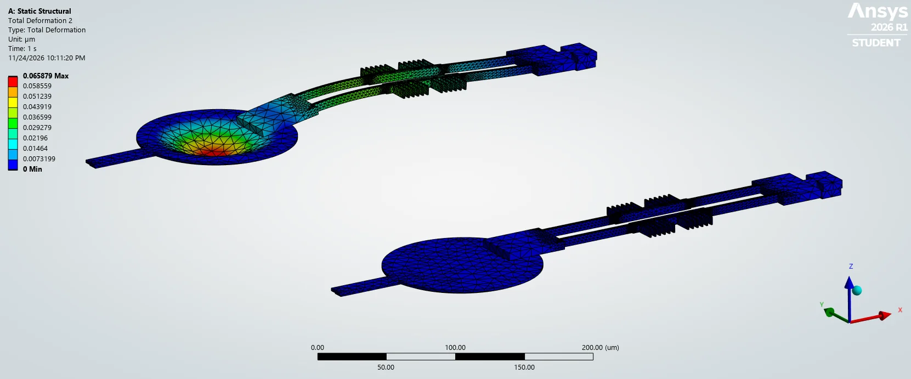
Pressure response
- From 0 to 1 atm, the SENSE fork’s frequency rises 5.16 kHz. The REF fork moves only 3.6 Hz over the whole sweep.
- The differential output changes by 50.9 Hz/kPa (76 ppm/kPa) from 0 to 1 atm and stays within 1.1 Hz of a straight line, 0.02% of the span. At 2.5 atm, it sits 38 Hz (0.3%) below that line.
- The model puts SENSE about 290 Hz above REF at 0 kPa, even though the units are identical, most likely from the mesh. That shifts the zero, not the slope.

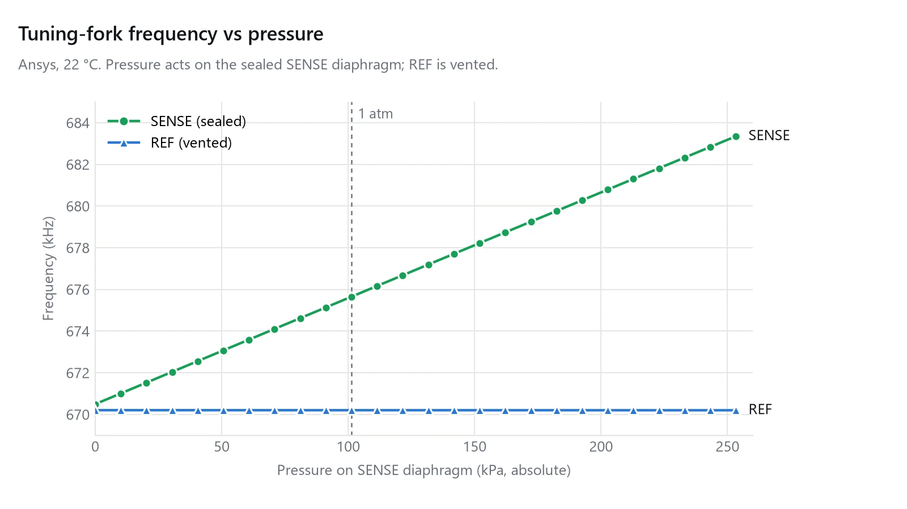

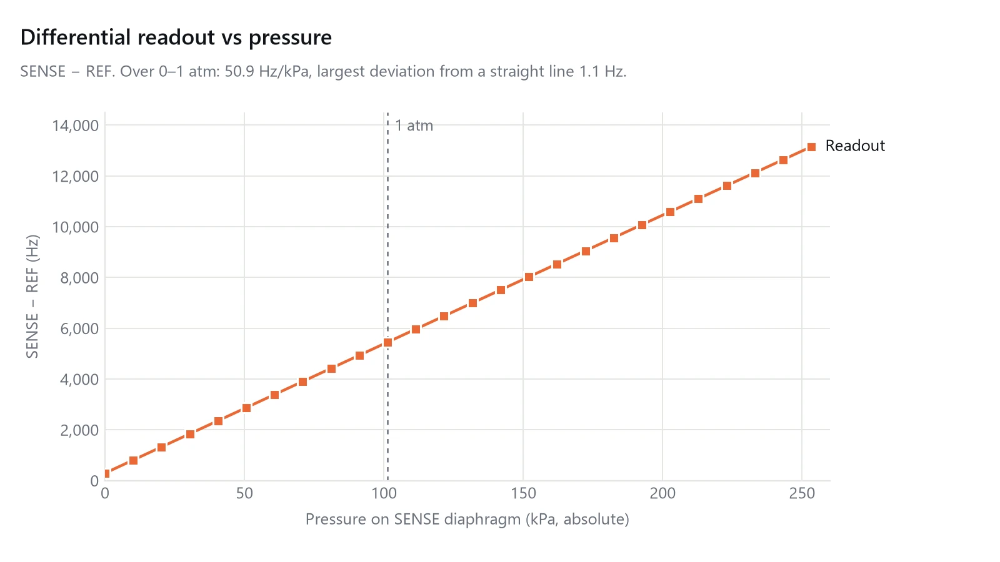
Temperature compensation
- From −35 to 85 °C, each fork drifts about −16 ppm/K (−10.7 Hz/K). That matches the −16.1 ppm/K I estimated by hand from the material’s modulus and expansion coefficients.
- Because both forks drift together, the differential output drifts only 0.093 Hz/K, about 115× less, or 1.8 Pa/K of apparent pressure.
- The −45 and −55 °C runs are left out, because they fall below the temperature range of the material data.

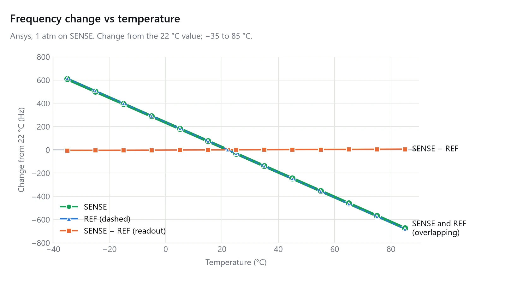

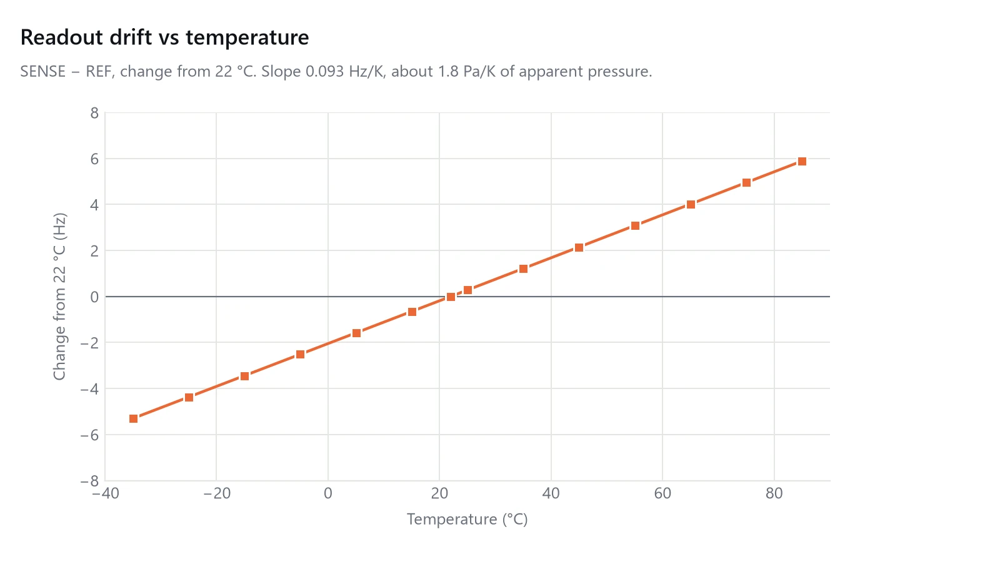
Mode separation
The wanted anti-phase mode sits at 670.2 kHz. The in-phase mode that the neck is meant to separate sits 3.2% below it, at 648.6 kHz, close to the 3.0% the beam model predicted. The nearest out-of-plane mode is 2.1% below, at 655.9 kHz.
How the design evolved
I started the design in the PolyMUMPs surface-micromachining process. I sized the tuning fork with hand calculations and beam FEA: lengthening the flexures from 18 to 60 µm lowered the resonance from 3.2 MHz to 670 kHz and raised pressure sensitivity 4.6×, while holding a 2× buckling margin. I laid out all 8 PolyMUMPs masks for a 1 mm² die that passed the foundry’s design rules, and Ansys modal FEA put the tine mode at 626 kHz, within 7% of the hand calculation.
Moving to the IMEMS-inspired process left room for the CMOS readout on the same chip and changed the device itself. The hole-etched diaphragm sealed with dots of epoxy became a hole-free, vacuum-sealed diaphragm, which removes the temperature error from air trapped in the cavity. The thin laminated tines became one 6 µm layer.